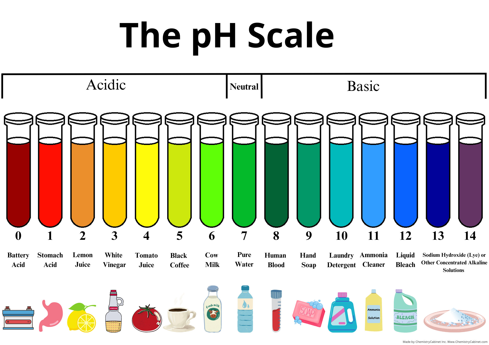

| Start | Introduction and hypothesis | Materials and procedure | Results and conclusions |
|---|
The pH scale is a number scale from 0 to 14 that measures the acidity or alkalinity of a solution. It indicates whether a substance is acidic, neutral, or alkaline. A pH of 7 is neutral, while values less than 7 are acidic, and values greater than 7 are alkaline.
The pH scale functions by quantifying the concentration of hydrogen ions (H+) in a solution. A lower pH indicates a higher concentration of H+ ions, making the solution acidic, and a higher pH indicates a lower concentration of H+ ions, making the solution alkaline.
Is a logarithmic scale: Each pH unit represents a tenfold change in the concentration of H+ ions. Used for classifying solutions: It helps categorize solutions as acidic, alkaline, or neutral.
Important in various fields: The pH scale is crucial in chemistry, biochemistry, environmental science, and even in understanding the human body's pH balance.
|  |
If the pH of a substance is tested using pH indicators or a pH meter, then acidic substances will have a pH value below 7, neutral substances will have a pH of 7, and basic (alkaline) substances will have a pH above 7, because the pH scale is a reliable tool for determining the concentration of hydrogen ions in a solution.